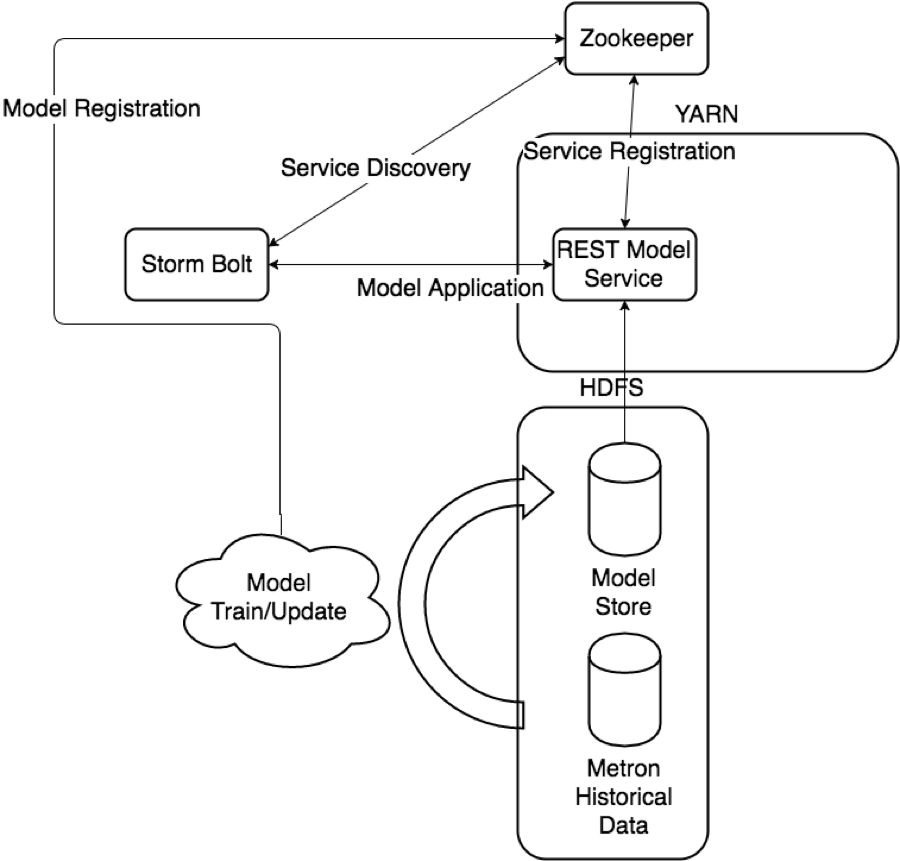

Model Management Infrastructure
Introduction
One of the main features envisioned and requested is the ability to augment the threat intelligence and enrichment processes with insights derived from machine learning or statistical models. The challenges with this sort of infrastructure are
- Applying the model may be sufficiently computationally/resource intensive that we need to support scaling via load balancing, which will require service discovery and management.
- Models require out of band and frequent training to react to growing threats and new patterns that emerge.
- Models should be language/environment agnostic as much as possible. These should include small-data and big-data libraries and languages.
To support a high throughput environment that is manageable, it is evident that
- Multiple versions of models will need to be exposed
- Deployment should happen using Yarn to manage resources
- Clients should have new model endpoints pushed to them
Architecture

To support these requirements, the following components have been created:
- A Yarn application which will listen for model deployment requests and upon execution, register their endpoints in zookeeper:
- Operation type: ADD, REMOVE, LIST
- Model Name
- Model Version
- Memory requirements (in megabytes)
- Number of instances
- A command line deployment client which will localize the model payload onto HDFS and submit a model request
- A Java client which will interact with zookeeper and receive updates about model state changes (new deployments, removals, etc.)
- A series of Stellar functions for interacting with models deployed via the Model as a Service infrastructure.
maas_service.sh
The maas_service.sh script starts the Yarn application which will listen for requests. Right now the queue for the requests is a distributed queue stored in zookeeper for convenience.
./maas_service.sh
usage: MaaSClient
-c,--create Flag to indicate whether to create
the domain specified with -domain.
-d,--domain <arg> ID of the timeline domain where the
timeline entities will be put
-e,--shell_env <arg> Environment for shell script.
Specified as env_key=env_val pairs
-h,--help This screen
-j,--jar <arg> Jar file containing the application
master
-l,--log4j <arg> The log4j properties file to load
-ma,--modify_acls <arg> Users and groups that allowed to
modify the timeline entities in the
given domain
-mc,--master_vcores <arg> Amount of virtual cores to be
requested to run the application
master
-mm,--master_memory <arg> Amount of memory in MB to be
requested to run the application
master
-nle,--node_label_expression <arg> Node label expression to determine
the nodes where all the containers
of this application will be
allocated, "" means containers can
be allocated anywhere, if you don't
specify the option, default
node_label_expression of queue will
be used.
-q,--queue <arg> RM Queue in which this application
is to be submitted
-t,--timeout <arg> Application timeout in milliseconds
-va,--view_acls <arg> Users and groups that allowed to
view the timeline entities in the
given domain
-zq,--zk_quorum <arg> Zookeeper Quorum
-zr,--zk_root <arg> Zookeeper Root
maas_deploy.sh
The maas_deploy.sh script allows users to deploy models and their collateral from their local disk to the cluster. It is assumed that the
- Collateral has exactly one .sh script capable of starting the endpoint
- The model service executable will expose itself as a URL endpoint (e.g. as a REST interface, but not necessarily)
- The model service executable will write out to local disk a JSON blob indicating the endpoint (see here for an example mock service using Python and Flask).
./maas_deploy.sh usage: ModelSubmission -h,--help This screen -hmp,--hdfs_model_path <arg> Model Path (HDFS) -lmp,--local_model_path <arg> Model Path (local) -l,--log4j <arg> The log4j properties file to load -m,--memory <arg> Memory for container -mo,--mode <arg> ADD, LIST or REMOVE -n,--name <arg> Model Name -ni,--num_instances <arg> Number of model instances -v,--version <arg> Model version -zq,--zk_quorum <arg> Zookeeper Quorum -zr,--zk_root <arg> Zookeeper Root
Kerberos Support
Model as a service will run on a kerberized cluster (see here for instructions for vagrant) with a caveat. The user who submits the service will be the user who executes the models on the cluster. That is to say that user impersonation of models deployed is not done at the moment.
Stellar Integration
Two Stellar functions have been added to provide the ability to call out to models deployed via Model as a Service. One aimed at recovering a load balanced endpoint of a deployed model given the name and, optionally, the version. The second is aimed at calling that endpoint assuming that it is exposed as a REST endpoint.
- MAAS_MODEL_APPLY(endpoint, function?, model_args) : Returns the output of a model deployed via model which is deployed at endpoint. endpoint is a map containing name, version, url for the REST endpoint, function is the endpoint path and is optional, and model_args is a dictionary of arguments for the model (these become request params).
- MAAS_GET_ENDPOINT(model_name, model_version?) : Inspects zookeeper and returns a map containing the name, version and url for the model referred to by model_name and model_version. If model_version is not specified, the most current model associated with model_name is returned. In the instance where more than one model is deployed, a random one is selected with uniform probability.
Example
Let’s augment the squid proxy sensor to use a model that will determine if the destination host is a domain generating algorithm. For the purposes of demonstration, this algorithm is super simple and is implemented using Python with a REST interface exposed via the Flask python library.
Install Prerequisites and Mock DGA Service
Now let’s install some prerequisites:
- Flask via yum install python-flask
- Jinja2 via yum install python-jinja2
- Squid client via yum install squid
- ES Head plugin via /usr/share/elasticsearch/bin/plugin install mobz/elasticsearch-head
Start Squid via service squid start
Now that we have flask and jinja, we can create a mock DGA service to deploy with MaaS:
- Download the files in this gist into the $HOME/mock_dga directory
- Make rest.sh executable via chmod +x $HOME/mock_dga/rest.sh
This service will treat yahoo.com and amazon.com as legit and everything else as malicious. The contract is that the REST service exposes an endpoint /apply and returns back JSON maps with a single key is_malicious which can be malicious or legit.
Deploy Mock DGA Service via MaaS
The following presumes that you are a logged in as a user who has a home directory in HDFS under /user/$USER. If you do not, please create one and ensure the permissions are set appropriate:
su - hdfs -c "hadoop fs -mkdir /user/$USER" su - hdfs -c "hadoop fs -chown $USER:$USER /user/$USER"
Or, in the common case for the metron user:
su - hdfs -c "hadoop fs -mkdir /user/metron" su - hdfs -c "hadoop fs -chown metron:metron /user/metron"
Now let’s start MaaS and deploy the Mock DGA Service:
- Start MaaS via $METRON_HOME/bin/maas_service.sh -zq node1:2181
- Start one instance of the mock DGA model with 512M of memory via $METRON_HOME/bin/maas_deploy.sh -zq node1:2181 -lmp $HOME/mock_dga -hmp /user/$USER/models -mo ADD -m 512 -n dga -v 1.0 -ni 1
- As a sanity check:
- Ensure that the model is running via $METRON_HOME/bin/maas_deploy.sh -zq node1:2181 -mo LIST. You should see Model dga @ 1.0 be displayed and under that a url such as (but not exactly) http://node1:36161
- Try to hit the model via curl: curl 'http://localhost:36161/apply?host=caseystella.com' and ensure that it returns a JSON map indicating the domain is malicious.
Adjust Configurations for Squid to Call Model
Now that we have a deployed model, let’s adjust the configurations for the Squid topology to annotate the messages with the output of the model.
- Edit the squid parser configuration at $METRON_HOME/config/zookeeper/parsers/squid.json in your favorite text editor and add a new FieldTransformation to indicate a threat alert based on the model (note the addition of is_malicious and is_alert):
{
"parserClassName": "org.apache.metron.parsers.GrokParser",
"sensorTopic": "squid",
"parserConfig": {
"grokPath": "/patterns/squid",
"patternLabel": "SQUID_DELIMITED",
"timestampField": "timestamp"
},
"fieldTransformations" : [
{
"transformation" : "STELLAR"
,"output" : [ "full_hostname", "domain_without_subdomains", "is_malicious", "is_alert" ]
,"config" : {
"full_hostname" : "URL_TO_HOST(url)"
,"domain_without_subdomains" : "DOMAIN_REMOVE_SUBDOMAINS(full_hostname)"
,"is_malicious" : "MAP_GET('is_malicious', MAAS_MODEL_APPLY(MAAS_GET_ENDPOINT('dga'), {'host' : domain_without_subdomains}))"
,"is_alert" : "if is_malicious == 'malicious' then 'true' else null"
}
}
]
}
- Edit the squid enrichment configuration at $METRON_HOME/config/zookeeper/enrichments/squid.json (this file will not exist, so create a new one) to make the threat triage adjust the level of risk based on the model output:
{
"enrichment" : {
"fieldMap": {}
},
"threatIntel" : {
"fieldMap":{},
"triageConfig" : {
"riskLevelRules" : [
{
"rule" : "is_malicious == 'malicious'",
"score" : 100
}
],
"aggregator" : "MAX"
}
}
}
- Upload new configs via $METRON_HOME/bin/zk_load_configs.sh --mode PUSH -i $METRON_HOME/config/zookeeper -z node1:2181
- Make the Squid topic in kafka via /usr/hdp/current/kafka-broker/bin/kafka-topics.sh --zookeeper node1:2181 --create --topic squid --partitions 1 --replication-factor 1
Start Topologies and Send Data
Now we need to start the topologies and send some data:
- Start the squid topology via $METRON_HOME/bin/start_parser_topology.sh -k node1:6667 -z node1:2181 -s squid
- Generate some data via the squid client:
- Generate a legit example: squidclient http://yahoo.com
- Generate a malicious example: squidclient http://cnn.com
- Send the data to kafka via cat /var/log/squid/access.log | /usr/hdp/current/kafka-broker/bin/kafka-console-producer.sh --broker-list node1:6667 --topic squid
- Browse the data in elasticsearch via the ES Head plugin @ http://node1:9200/_plugin/head/ and verify that in the squid index you have two documents
- One from yahoo.com which does not have is_alert set and does have is_malicious set to legit
- One from cnn.com which does have is_alert set to true, is_malicious set to malicious and threat:triage:level set to 100